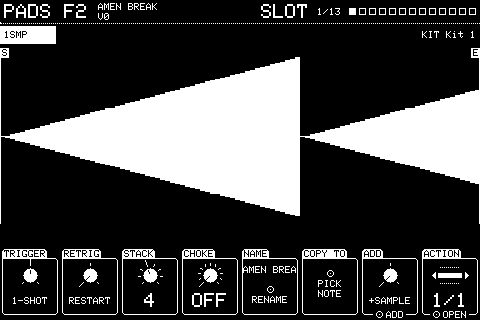
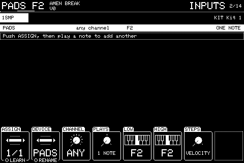
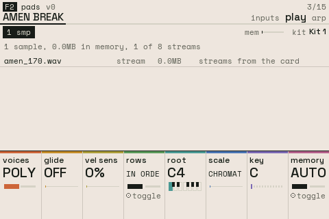
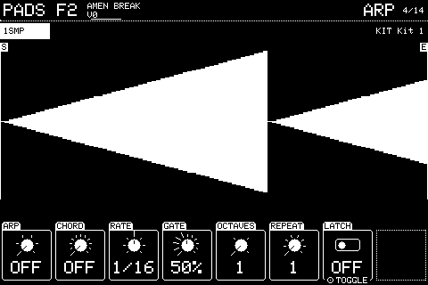

Chapter 2
Slot pages
2.1 SLOT
Select a slot by playing it; SLOT is its first page (Shift + PREV).

How the slot behaves when it's pressed, and the list of its actions. A slot is whatever a note plays: its actions can be samples, MIDI notes out, or presses of other slots. The pages from SAMPLE on edit the action picked here.
| Knob | Setting | Turn | Push |
|---|---|---|---|
| 1 | ADD | Choose SAMPLE, MIDI or TRIGGER | Adds an action of that type and opens its first page |
| 2 | ACTION | Which action the later pages edit | Opens it; Shift + push deletes it |
| 3 | TRIGGER | GATE plays while held. 1-SHOT plays to the end (and behaves as LATCH if a sample loops). LATCH plays until pressed again. | |
| 4 | RETRIG | A second press while it's playing: RESTART cuts the first and starts again, STACK plays alongside it, IGNORE does nothing until the first has finished. | |
| 5 | STACK | How many presses can sound at once with RETRIG on STACK, 1 to 8. | |
| 6 | CHOKE | OFF, or a choke group 1 to 32: slots in the same group cut each other off. | |
| 7 | NAME | Renames the slot with the knobs | |
| 8 | COPY TO | Then play a note: the slot is copied onto it, replacing what was there |
Knobs not listed do nothing here. Shift + push puts most settings back to how a new one has them.
2.2 INPUTS
NEXT from SLOT.

Everything that plays this slot in the live kit: each assignment is a device, a channel and a note or range of notes.
| Knob | Setting | Turn | Push |
|---|---|---|---|
| 1 | ASSIGN | Which assignment is shown | LEARN: then play a note on any device to add one. Shift + push removes the one shown |
| 2 | DEVICE | The device, or ANY | Renames the device |
| 3 | CHANNEL | ANY, or MIDI channel 1 to 16 | |
| 4 | PLAYS | 1 NOTE plays the slot at its root. PITCHED shifts each note by its distance from the root. STEPPED (Levels) plays every note at the root with one setting stepped from low to high across the range. | |
| 5 | LOW | The lowest note of the range | |
| 6 | HIGH | The highest note of the range | |
| 7 | STEPS | With STEPPED, what steps across the range: VELOCITY or TUNE | |
| 8 | ZONE KEYS | With zones (ZONES page): the device whose keys play them |
Knobs not listed do nothing here. Shift + push puts most settings back to how a new one has them.
2.3 PLAY
NEXT from INPUTS.

How the slot plays when several notes reach it, mostly for pitched ranges.
The picture lists the slot's samples and where each lives: whole in memory or streamed from the card. MEMORY decides which. Each whole one says why: short, MEMORY WHOLE, a loop, REVERSE, zones, played across keys, or not 16-bit.
| Knob | Setting | Turn | Push |
|---|---|---|---|
| 1 | VOICES | POLY lets notes ring together, MONO plays one at a time | |
| 2 | GLIDE | OFF, or a slide between notes up to 2 seconds | |
| 3 | VEL SENS | How much how hard you play changes the level, 0 to 100% | |
| 5 | ROOT | The note the slot plays at its own pitch | |
| 6 | SCALE | Puts a pitched range in a scale (CHROMATIC, MAJOR, MINOR, modes, pentatonics, BLUES): every key in the range plays the next note of the scale, counting up from ROOT | |
| 7 | KEY | The scale's key, C to B | |
| 8 | MEMORY | AUTO streams long samples from the card. WHOLE keeps them whole in memory where they fit. | Toggles |
Knobs not listed do nothing here. Shift + push puts most settings back to how a new one has them.
2.4 ARP
NEXT from PLAY.

An arpeggiator for notes held on a pitched range, played one at a time at the sequencer's tempo, modelled on FL Studio's.
| Knob | Setting | Turn | Push |
|---|---|---|---|
| 1 | ARP | OFF, UP, DOWN, UP DOWN, RANDOM or AS PLAYED | |
| 2 | CHORD | Builds a shape on each held key (MAJOR, MINOR, 7, SUS, POWER, scales and more), or OFF | |
| 3 | RATE | How fast, 1/4 to 1/32T | |
| 4 | GATE | How long each note sounds, 10 to 100% of a step | |
| 5 | OCTAVES | Spreads the pattern up 1 to 4 octaves | |
| 6 | REPEAT | Plays it 1 to 8 times before moving up an octave | |
| 7 | LATCH | Keeps playing after the keys are let go | Toggles |
Knobs not listed do nothing here. Shift + push puts most settings back to how a new one has them.